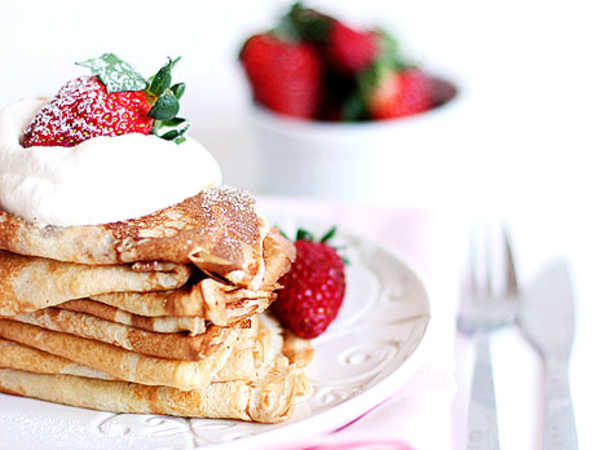

Pancakes!

Ingredients
- 2 1/2dl wheat flour
- 1/2 tspn salt
- 6dl milk
- 3 eggs
- 3tbsp butter
- Jam, fruit or berries for serving
Instructions
- Mix flour and salt. Whisk in half of the milk and keep whisking until you have a smooth batter. Whisk in the rest of the milk and egss
- Melt the butter in a frying pan and whisk into the batter. Fry thin pancakes from the batter in a fryingpan.
- Serve together with jam, berries or fruit.
Comments